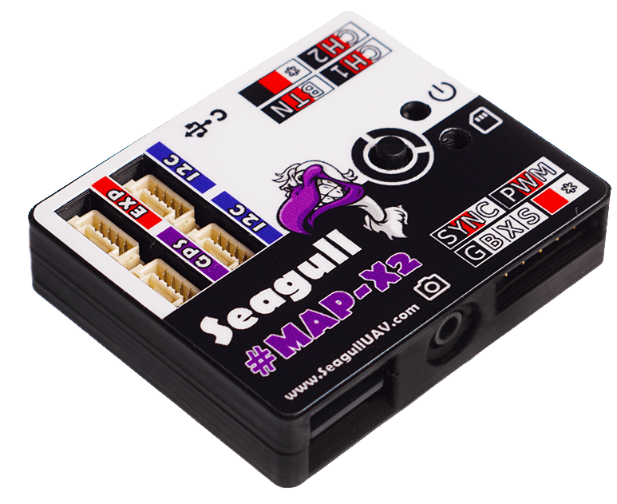

Camera Triggering using Seagull MAP-X2¶
{kind=link}
The Seagull MAP-X2 is a precision camera shutter trigger and logger. It can be connected to Pixhawk or other ArduPilot compatible autopilot in order to automate camera shutter triggering and log the precise co-ordinates of each photo for geotagging purposes.
The current list of compatible cameras can be found on Seagull Cable Finder.
Seagull MAP-X2 utilizes event based logging for extra precision if used with the Seagull SYNC2 Hot Shoe Adapter
The board supports 4 shutter trigger modes:
ACT (“AutoCustomTrigger”) : user is able to define required focus time and then trigger
PWM : fully customisable PWM trigger for cameras that utilze PWM triggering
SST : read event signal then trigger
Timelapse : user defined interval triggering
Seagull MAP-X2 also supports “Camera ON/OFF” - which is exclusive to Sony MULTI cameras.
More detailed instructions on how to setup MAP-X2 are provided in the Seagull MAP-X2 Manual as well as Seagull MAP-X2 Support page.
[copywiki destination=”copter,plane,rover”]